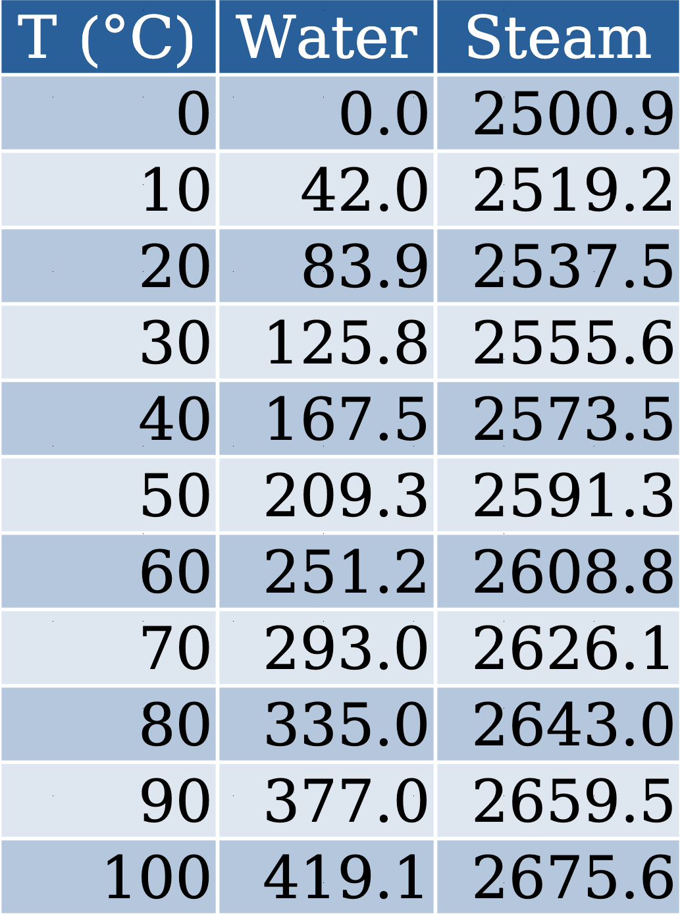
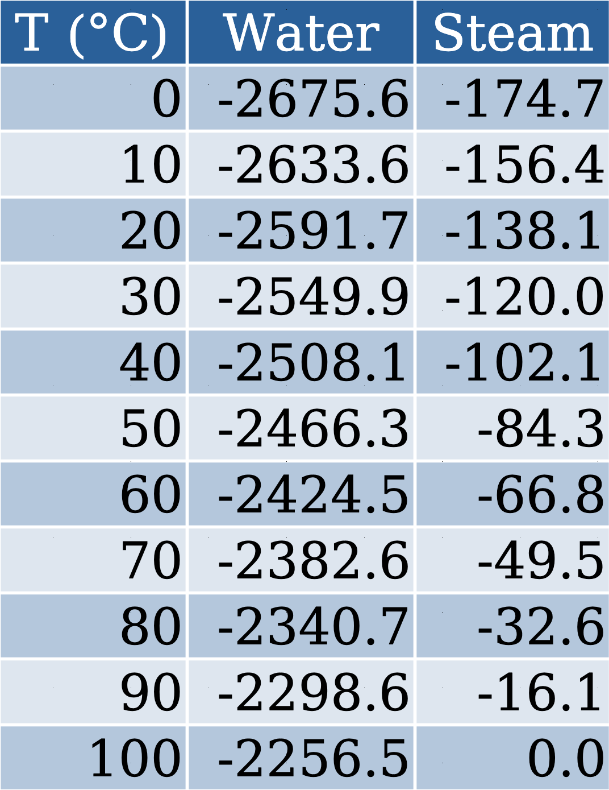
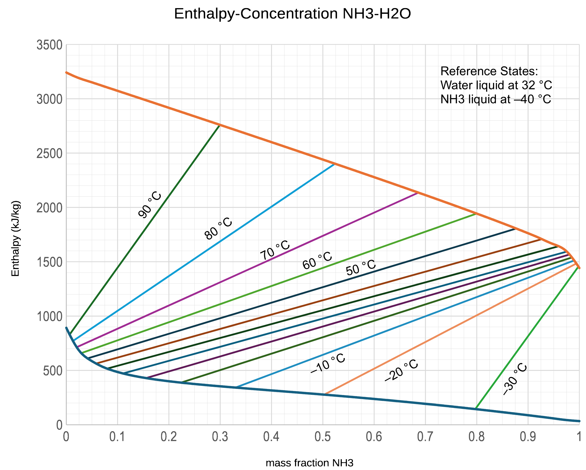

Reference Not Found: Mixing, Dissolving, and Changing the Rules

Introduction
This video explains:
- Reference states
- \(\Delta H\) of solution
- \(\Delta H\) of mixing
- Other leftovers
Reference states


Calculate the average heat capacity of saturated steam from \(10\ ^\circ\mathrm{C}\) to \(90\ ^\circ\mathrm{C}\) for both of the steam tables given:
Table values are \(\hat{H}\) in \(\mathrm{kJ/kg}\).
Table 1
\[\overline{C}_{p}=\frac{\overline{H}_{2}-\overline{H}_{1}}{T_{2}-T_{1}}=\frac{2659.5-2519.2}{90-10}=1.754\ \mathrm{\frac{kJ}{kg^{\circ}C}}\]
Table 2
\[\overline{C}_{p}=\frac{\hat{H}_{2}-\hat{H}_{1}}{T_{2}-T_{1}}=\frac{-16.1-(-156.4)}{90-10}=1.754\ \mathrm{\frac{kJ}{kg^{\circ}C}}\]
Why are the tables different?
(Specific) Integral Heat of Solution
\[\hat{H}_s(T, r)\]
One mole of solute dissolved in \(r\) moles of solvent.
Usually referenced to pure solvent at some \(T\). Can be referenced to pure solute or infinitely dilute solute.
(Specific) Integral Heat of Mixing
One mole of solution made from \(x\) moles of liquid 1 and \(1-x\) moles of liquid 2. Usually referenced to pure species 1 and species 2 at some temperature.
Example: A \(25\%\) solution of NaOH in water at \(100\ ^\circ \mathrm{F}\) is to be diluted to a \(9.09\%\) solution by adding pure water. What temperature must the dilution water be at for the final mixture to be at \(80\ ^\circ \mathrm{F}\)?
\[25\% \ \mathrm{NaOH} = \frac{1 \ \mathrm{mol\ NaOH}}{1 \ \mathrm{mol\ NaOH} + 3 \ \mathrm{mol\ H_2O}} \implies r = \frac{3 \ \mathrm{mol\ H_2O}}{1 \ \mathrm{mol\ NaOH}}\]
\[9.09\% \ \mathrm{NaOH} = \frac{1 \ \mathrm{mol\ NaOH}}{1 \ \mathrm{mol\ NaOH} + 10 \ \mathrm{mol \ H_2O}} \implies r = \frac{10 \ \mathrm{mol \ H_2O}}{1 \ \mathrm{mol\ NaOH}}\]
1st-law: \(\Delta H = 0\)
Pathway:
\(4\ \mathrm{mol\ mix}\ @\ 100\ ^\circ\mathrm{F\ to\ } 4\ \mathrm{mol\ mix}\ @\ 25\ ^\circ\mathrm{C},\ \Delta H_1\)
\(7\ \mathrm{mol\ H_2O}\ @\ T\ ^\circ\mathrm{F\ to\ }7\ \mathrm{mol\ H_2O}\ @\ 25\ ^\circ\mathrm{C},\ \Delta H_2\)
\(4\ \ \mathrm{mol\ mix} + 7\ \ \mathrm{mol\ H_2O}\ @\ 25\ ^\circ\mathrm{C\ to\ } 11\ \ \mathrm{mol\ mix}\ @\ 25\ ^\circ\mathrm{C},\ \Delta H_3\)
\(11\ \ \mathrm{mol\ mix}\ @\ 25\ ^\circ\mathrm{C\ to\ } 11\ \ \mathrm{mol\ mix}\ @\ 80\ ^\circ\mathrm{F},\ \Delta H_4\)
\(\Delta H_1 + \Delta H_2 + \Delta H_3 + \Delta H_4 = 0\)
Lacking other data, assume \(C_p\) for mix is mole-weighted average of \(C_p\) for individual species. \(C_p\) values from Wikipedia. You could use the Steam Tables for \(\Delta \hat{H}_\mathrm{H_2O}\) with a slight change in answer.
\[\Delta H_1 + \Delta H_2 + \Delta H_3 + \Delta H_4 = 0\]
\[\Delta H_1 = \sum n_i \overline{C}_{p-i} \Delta T = (1 \cdot 0.0595 + 3 \cdot 0.0754)(25 - 37.78) = -3.61\ \mathrm{kJ}\]
\[\Delta H_2 = n_\mathrm{H_2O} \overline{C}_{p–\mathrm{H_2O}} \Delta T = 7 \cdot 0.0754 (25 - T_\mathrm{initial})\]
\[\Delta H_4 = \sum n_i \overline{C}_{p-i} \Delta T = (1 \cdot 0.0595 + 10 \cdot 0.0754)(26.67 - 25) = 1.36\ \mathrm{kJ}\]
\(\Delta \hat{H}_3\)
Inspired Guesses
At \(r = 3\) and \(T = 25\ ^\circ\mathrm{C}\), \(\Delta \hat{H}_{s-25\%} = -29.0\ \mathrm{kJ/mol\ NaOH}\)
At \(r = 10\) and \(T = 25\ ^\circ\mathrm{C}\), \(\Delta \hat{H}_{s-9.09\%} = -42.5\ \mathrm{kJ/mol\ NaOH}\)
\(\Delta H_3 = n_\mathrm{NaOH} \left(\Delta \hat{H}_{s-9.09\%} - \Delta \hat{H}_{s-25\%} \right)\)
\(= 1 \left[ -42.5 - (-29.0) \right]\)
\(= -13.5 \text{ kJ}\)
Solving for \(\Delta H_2\) and \(T_\mathrm{initial}\)
\[\Delta H_2 = -(\Delta H_1 + \Delta H_3 + \Delta H_4) = 3.65 + 13.5 - 1.36 = 15.79\ \mathrm{kJ}\]
\[\Delta H_2 = n_\mathrm{H_2O} \overline{C}_{p-\mathrm{H_2O}} \Delta T = 7 \cdot 0.0754 (25 - T_\mathrm{initial}) = 15.79\ \mathrm{kJ}\]
\[T_\mathrm{initial} = -4.92\ ^\circ\mathrm{C} = 23.14\ ^\circ \mathrm{F}\]
The temperature is below the freezing point of water. Since the enthalpy of fusion is so large, you would actually add a mixture of water and ice at \(32\ ^\circ \mathrm{F}\). It would take a little extra calculation to figure out how much ice.
Example: A \(\mathrm{50\%\ H_2O - 50\%\ NH_3}\) mixture at its bubble point is introduced into a heated single-stage flash unit. The exit streams are at \(122\ ^\circ \mathrm{F}\). What are their compositions and how much heat must be added to the flash per kilogram of feed?

\[\hat{H}_i = 278.2\ \mathrm{kJ/kg}\]
\[\hat{H}_f = 1266.4\ \mathrm{kJ/kg}\]
\[\Delta \hat{H}_f = 1266.4 - 278.2 = 988.2\ \mathrm{kJ/kg}\]
\[x_\mathrm{NH_3} = 0.043\]
\[y_\mathrm{NH_3} = 0.877\]
The Takeaways
- Internal energy, \(U\), and enthalpy, \(H\), both have arbitrary zeros. What is important is the \(\Delta H\). Don’t mix data from different sources when calculating \(\Delta H\)’s, unless you know what you are doing.
- The integral heat of solution, \(\Delta \hat{H}_s\), is the change in enthalpy we get when a quantity of solute is added to a solvent and the mixture is brought back to the original temperature.
- The integral heat of mixing, \(\Delta \hat{H}_m\), is the change in enthalpy we get when a quantity of one fluid is added to another fluid and the mixture is brought back to the original temperature.
Thanks for watching!
The previous video in the series is in the link in the upper left. The next video in the series is in the upper right. To learn more about Chemical and Thermal Processes, visit the website linked in the description.
The DOFPro Team